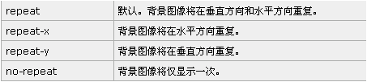
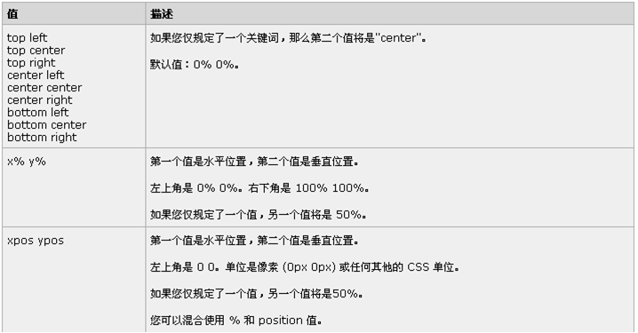

第十节---CSS样式(上)
css样式(上)
<1>css - background背景属性
background 是简写属性，在一个声明中设置所有的背景属性；
<1> background-color: 规定要使用的背景颜色;
<2> background-position: 规定背景图像的位置;
<3> background-size:规定背景图片的尺寸;
<4> background-repeat:规定如何重复背景图像;
<5> background-image:把图像设置为背景;
<2>css - background背景属性
background-repeat:规定如何重复背景图像

<3>css - background背景属性
background-position: 规定背景图像的位置
body{
background-image:url('1.gif');
background-repeat:no-repeat;
/*需要把 background-attachment属性设置为"fixed"才能保证该属性在
Firefox和Opera 中正常工作。*/
background-attachment:fixed;
background-position:center;

<1>css - background应用
<!--css/js-->
<style type="text/css">
*{margin:0;padding:0;}
body{
/*背景颜色*/
background-color:#ffcc00;
/*背景颜色，简写形式，一般企业级开发都使用此方式*/
background:red;
/*背景图片*/
background-image:url("images/1.gif");
/*背景图片，简写形式，一般企业级开发都会使用此方式*/
background:url("images/1.gif");
/*background-repeat:规定如何重复背景图像;*/
/*默认值，重复*/
background-repeat: repeat;
/*背景图片不重复*/
background-repeat: no-repeat;
/*横向平铺
background-repeat: repeat-x;*/
/*纵向平铺
background-repeat: repeat-y;*/
/*背景图像的位置 background-position:垂直 水平;*/
background-position:top left;
background-position:top center;
background-position:top right;
background-position:center left;
background-position:center center;
background-position:center right;
background-position:bottom left;
background-position:bottom center;
background-position:bottom right;
/*背景图像位置的百分比形式 background-position:水平 垂直;*/
background-position:80% 40%;
/*背景图片位置的数值形式 background:水平 垂直;*/
background-position:200px 100px;
/*背景图像企业级应用方式*/
background:url("images/mv.jpg") no-repeat 200px 30px;
background-size
auto:将图片自适应填充到容器中，也是图片原本的大小
cover:将图片等比缩放到完全覆盖容器，背景图像有可能超出容器
contain：将背景图片等比缩放到宽度或者高度与容器的宽度或者高度相等
背景图片始终被包含在容器内。
更多详细设置请参考CSS开发文档
}